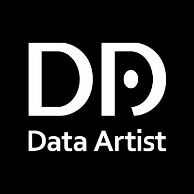
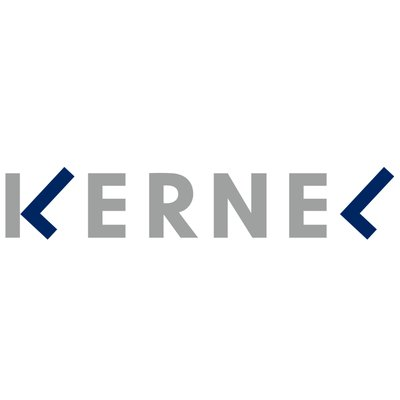

I made some products, write blogs, take notes of class..., please look around!!
Shuto's portfolio
CAREER
20
years old. #Bioinformatics #Machine Learning #the University of Tokyo
-

 Study Machine Learning at HAIT. (2018.02)
I was vaguely intereseted in AI, and I happened to get information on Twitter on the day when the application started. I feel a sort of fate with HAIT, and that's why I applied for a selection. I met lots and lots of excellent and stimulating friends there. From then, I was attracted of machine learning, and deep learning. AI_STANDARD(operating company of HAIT.)
Study Machine Learning at HAIT. (2018.02)
I was vaguely intereseted in AI, and I happened to get information on Twitter on the day when the application started. I feel a sort of fate with HAIT, and that's why I applied for a selection. I met lots and lots of excellent and stimulating friends there. From then, I was attracted of machine learning, and deep learning. AI_STANDARD(operating company of HAIT.) -  Working at Data Artist. (2018.05~2019.03)
It was the first time for me to do internship activity. I made a couple of models which predict "Twitter user's profile", "TV program ratings", or "Optimal strategy in the Optimization problems". Thanks to the grate environment, I did the best performance there, and I thought I could improve my ability of mere coding, and logical thinking. I hope I could work with again.d Data Artist.
- Advanced to Bioinformatics Department. (2018.09)
From my experience at Data Artist, I thought I should have academic specialty, because in the next few years, I believed machine learning would be a commodity, and everyone could use it easily. At that time, I found the "Department of Bioinformatics", where we could study both Biology and Informatics. I have been interested in Biology especially gene, so I decided to advance to there. Department of BIoinformatics and System Biology
- Founded LGTM. (2018.10)
In the University of Tokyo, some students do internship as the engineers, but there was no community for them. We thought engaging and sharing knowledge among engineers of the same ages is exciting and leads to our growth, so we made such a exciting community. We did hackthon, tech meetup, LT, and so on. Please visit our website below. LGTM
-  Joined KERNEL. (2019.3)
KERNEL is an AI-focused incubation community for those who aspire to change the world through technology. I communicate with a lots of excellent students and adults there. Thanks to KERNEL, imporoving my ability and QOL knows no bounds. KERNEL -DEEPCORE-
- Working at Neural Pocket. (2019.4~)
The best reason why I chose Neural Pocket is the approach to the problems. This company's method for problem solving based on "consultant", I thought. I was convinced that I could get out of DL black box in practice. I mentioned this in the blog, so please look at there. Neural Pocket
Contents
- Blog
I summarize what I thought every day. Note: This blog is updateing irregularly. Blog
- Arashi Recognition
This is my first web application. I use deeplearning method to calcurate how much the face is similar to Arashi members. Here is the demo.
 Arashi Recognition
Arashi Recognition - Lecture
Summarize what I studied at the University of Tokyo. It's for you, and me. Please download any document freely from here. Lecture Note
-
 PRML
The official name is "Pattern Recognition and Machine Learning". This book attracted me to DL and ML world!! You can download original book free from here.
I'm explaining brief content in slide, and implement it in Python.
PRML
PRML
The official name is "Pattern Recognition and Machine Learning". This book attracted me to DL and ML world!! You can download original book free from here.
I'm explaining brief content in slide, and implement it in Python.
PRML


Shuto's portfolio
This site tells you what I am like.
This site tells you what I am like. Please enjoy looking around, and if you get interest in me, don't hesiate to contact me. Let's hack something marvelous product together. Or, let's drink delicious wine!!